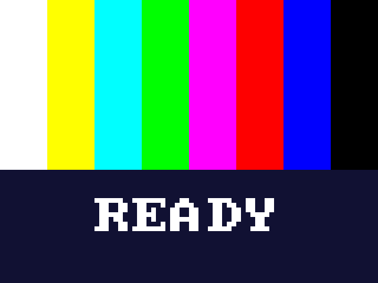

Get ready to build a computer from logic gates
In this course you will design real digital circuits in Verilog and run them on an FPGA board. You start with a single gate. You finish with a working CPU, or with your own retro video game.
Lesson 0 makes sure everything works
Before learning anything, we install the tools, connect the board, and prove that the whole chain works: your computer, the design software, the simulator, the cable and the board.
About one hour, mostly waiting for downloads.
What you need
The DE10-Lite board
Terasic's board with an Intel MAX 10 FPGA chip, switches, buttons, LEDs and number displays.
The LCD + game-pad shield
Plugs on top of the board: a colour screen, a game pad, a wheel and a buzzer.
A USB cable
Comes with the board. It powers the board and carries your designs to it.
A Windows computer
With internet and about 20 GB free disk space. The design software is big.
Three things on your desk
- The chat is your teacher. You stay in VS Code and talk to it. Ask it "what now?" any time: it knows where you are.
- It teaches with these slides, opened in a tab right next to the chat, and with real code you read and change together.
- It never writes your circuits. It runs the tools, builds, loads the board, explains errors and gives hints. The thinking is yours.
- Every lesson ends on the board. First a test in the simulator must pass, then you see it working for real.
Install VS Code
VS Code is a program for writing code. The chat will live inside it, and you will write your Verilog in it.
- Go to code.visualstudio.com.
- Click the big Download for Windows button.
- Run the file you downloaded. Click Next until it finishes. The defaults are fine.
Install Git
Git copies projects from the internet to your computer, and keeps them up to date. This course improves all the time, and Git is how you get the improvements.
- Go to git-scm.com/downloads and click Windows.
- Download the installer, run it, and click Next on every screen. The defaults are fine.
- Close VS Code and open it again, so it finds Git.
Add your coach: Claude Code
- In VS Code, click the Extensions icon on the left side (four little squares).
- Search for Claude Code and click Install.
- Open it (the Claude icon) and sign in with your Claude account.
- Type
helloin the chat and press Enter.
Copy the course to your computer, with clicks only
- In VS Code press Ctrl+Shift+P. A search box opens at the top.
- Type Git: Clone and press Enter.
- Paste this address and press Enter:
https://github.com/avisalmon/De10LiteBKM.git - Choose a folder to keep it in (Documents is fine) and click Select as Repository Destination.
- When the message appears at the bottom, click Open, then Yes, I trust the authors.
lessons, README.md, CLAUDE.md...my_designs. Course updates never touch it.Now go to the chat and type:
From here the chat is your teacher. It installs what it can by itself, tells you exactly what to click when it needs you, and from now on shows these slides inside VS Code, next to the chat.
Coming back tomorrow? Open VS Code and ask what now? It continues where you stopped.
Install Quartus and ModelSim
Quartus Prime Lite is Intel's free design software. It turns your Verilog into the exact wiring of the FPGA chip. ModelSim is the simulator: it tests your circuit on the computer before it goes to the board.
- Create a free account on the Altera (Intel FPGA) website. Use your own details.
- On the download page choose Lite Edition, release 17.1, tab Individual Files. The chat opens the page for you.
- Download the three files on the right into one folder.
- Run
QuartusLiteSetup. Keep the default folder. Make sure MAX 10 and ModelSim Starter are ticked. - At the end, leave the USB Blaster driver installation ticked and click Install.
Connect the board
- The shield: if it's not on the board yet, line its pins up with the board's black header sockets and press gently. Never force it.
- The cable: plug the USB cable into the board's USB port (it has only one), and the other end into your computer.
- The board's power LED lights up. The same cable powers the board.
- Tell the chat. It checks that the computer sees the board.
Check 1: does the computer have everything?
The chat runs a check-up called doctor. Every line must say OK.
- Python and env: the helper scripts the chat uses.
envis a private box of Python tools just for this course. - Quartus: turns your Verilog into a design for the chip.
- MAX 10 support: Quartus' data about our exact chip.
- ModelSim: the simulator.
- USB-Blaster: the part of the board that talks to your computer over the cable.
Check 2: a circuit tested in the simulator
A simulation tests a circuit in software, before it goes to the chip. It is fast and shows every signal. In this course, every circuit passes a test before it goes to the board.
The chat runs a test on the smallest circuit there is: an AND gate. Its output y is 1 only when
both inputs a and b are 1. The test tries all four input pairs and compares.
| a | b | y |
|---|---|---|
| 0 | 0 | 0 |
| 0 | 1 | 0 |
| 1 | 0 | 0 |
| 1 | 1 | 1 |
Check 3: your first design on the board
The chat builds a ready-made test design on your computer and sends it to the board. That proves Quartus works too. While it builds (about 2 minutes), this is what happens:
- Synthesis turns the Verilog into logic gates.
- The fitter places those gates inside the chip and wires them up.
- Timing analysis checks the design is fast enough.
- Programming sends the result over the USB cable into the chip.

The end of lesson 0
What you proved
- The simulator tests circuits.
- Quartus builds a design for your chip.
- The board runs it.
Next: lesson 0.1, what an FPGA is
Ask the chat what now? and it takes you there.